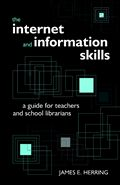

|  |
| About IR |
| Editors |
| Author instructions |
| Copyright |
| Author index |
| Subject index |
| Search |
| Reviews |
| Register |
| Home |
Herring, James E. The Internet and information skills: a guide for teachers and school librarians. London: Facet Publishing, 2004. xxi, 171 p. ISBN 1-85604-493-9. £24.95
Society is nowadays often called an information or knowledge society. Is this really true? Did people really need or use less knowledge back in history? Whatever we think about this, it is a fact that information overload is looked upon as a problem in our time, and that we thus need tools to deal with this problem.
In schools and in other educational contexts it has become praxis to work in a more explorative way. Access to information has, of course, meant a lot in this respect. But these ways of working can also be motivated from a pedagogical and societal point of view. People of today must be able to handle vast amounts of information, be able to sort out and evaluate what is found. It can be discussed whether the pedagogical theories or access to information came first, but nowadays they certainly seem to walk hand in hand. Therefore books that deal with these aspects are vital to librarians and teachers.
In his book, James E. Herring discusses these issues in a basic way. He points out that it is important that the school library contributes to learning and provides educational support. The more specific issue of the book is how to utilize the internet within an educational context. He stresses the importance of information literacy and discusses what can be meant by this concept.
Herring relates different pedagogical outlooks and points out that it is important that information skills are seen in the context of curriculum, and not as a separate issue. The development of information skills should be integrated in education as a whole. He also emphasizes the necessity of collaboration between teachers and librarians. These ways of dealing with information are important also in the context of life-long learning. Such aspects are normally found in literature of this kind, but are often overlooked in practice, so it is important that Herring stresses them again.
In a more precise way, Herring introduces his so called PLUS-model for working with information seeking in schools. The model gives us four steps. The first one is Purpose, for example, the students should start by thinking over the aim or meaning of the assignment. The next step is Location, i.e., where can the useful information be found? How can it be evaluated? The third step is Use, and here the student should develop skills in taking notes, skimming, scanning and so on. The last part is Self-evaluation, something that is very important from a pedagogical point of view. The students should be encouraged to evaluate what they have achieved. Herring maintains that it is common for students to regard internet resources in the same way as books, which can be misleading, since the web is so unstructured.
Herring demonstrates in a basic and constructive way how to use search engines, databases and subject gateways, and stresses the importance of the evaluation of websites. The point of using databases and subject gateways is, of course, to gain access to material that has been evaluated and chosen as good stuff. However, the disadvantage is that if you only use selected material you never develop the ability to evaluate for yourself. Herring could perhaps have discussed this problem, but in many ways his suggestions are very useful, and that is most valuable.
Herring's book is a thorough and practical instruction in how to use the internet in educational situations. Books of this kind are a valuable resource for librarians and teachers, and his way of dealing with the matter is founded in pedagogical research. The problem of how to help students develop information literacy is an important issue in many countries and this kind of instructional program to deal with it is useful. For those who have been working with the internet for a while it might not contribute anything new, but still, he has put knowledge in the field together in a valuable and useful way.
Eva-Maria Flöög
Swedish School of Library and Information Science
Borås
April 2004
How to cite this review
Flöög, Eva-Maria (2004). Review of: Herring, James E. The Internet and information skills: a guide for teachers and school librarians. London: Facet Publishing, 2004. Information Research, 9(3), review no. R137 [Available at: http://informationr.net/ir/reviews/revs137.html]